Intro to Generative AI
CAS Deep Learning - Computer Vision (Part1)
Institute for Data Science I4DS, FHNW
Overview
- Motivation & Applications
- What is Generative Modelling?
- Learning Generative Models
- Desirable Properties
- Comparing Approaches
- Evaluation
Motivation
Can You Tell This is Fake?
This is a synthetic image generated by AI.
Image Generation: Midjourney
Creating highly creative and diverse images from text prompts
Video Generation: Midjourney
Recent advances enable short video generation
Consistent Multi-Modal Generation


OpenAI’s model generates consistent edits following instructions
Magic Editing
Google Magic Editor: Is this how it really happened?
Super-Resolution
Generative models can enhance detail and up-sample images spatially
Gaming: NVIDIA DLSS
Up-scaling using neural networks is cheaper than native high-res rendering
Ray Tracing Reconstruction
Generative AI for expensive ray tracing operations
Medical Applications: MRI to CT
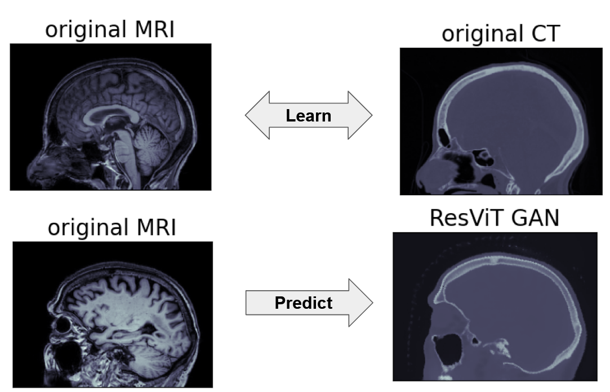Convert MRI to synthetic CT scans without radiation exposure
Synthetic Training Data
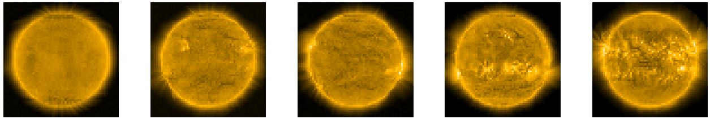Generate synthetic training data for solar flare prediction
Commercial: Virtual Staging
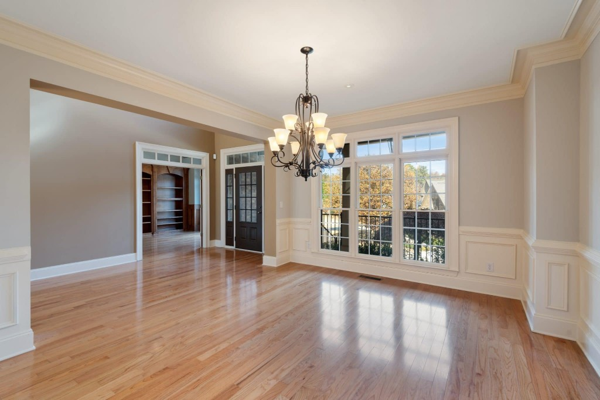
Real estate: virtually furnish empty rooms
Evolution of Quality
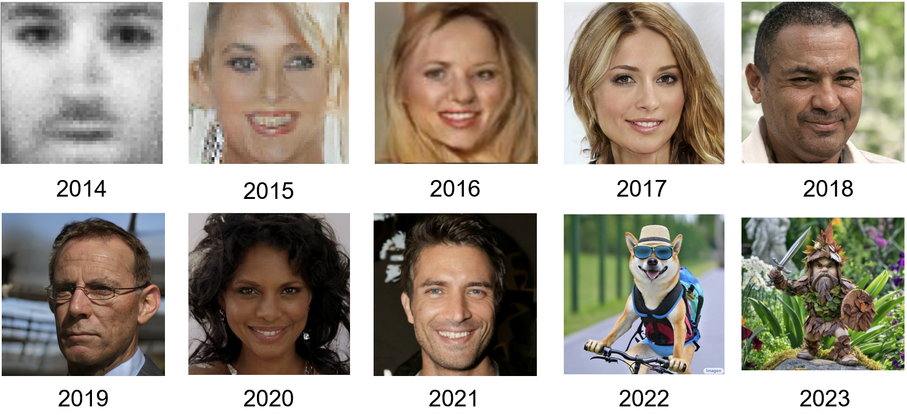From 2014 to 2023: Dramatic quality improvements
What is Generative Modelling?
Classification Task
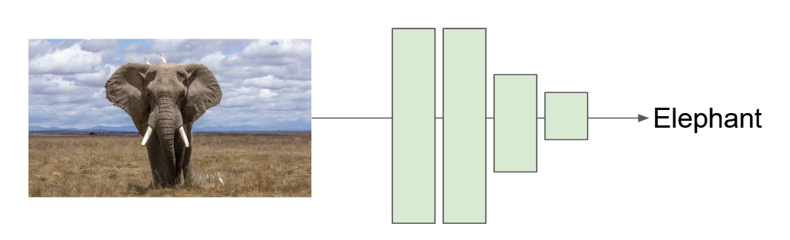Classification: \(f(\mathbf{x}) = \mathbf{y}\) (many-to-one mapping)
Generative Modelling
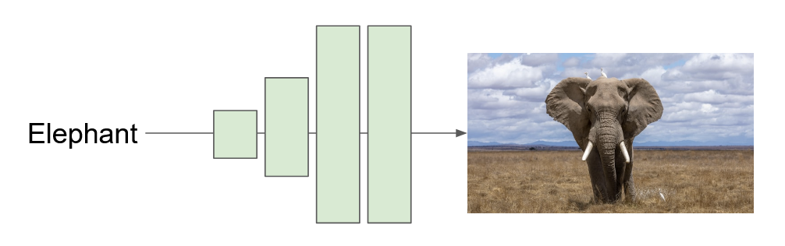Generation: \(g(\mathbf{y}) = \mathbf{x}\) (one-to-many mapping)
Quiz: The Problem
If the input is only a label like “elephant,” how can the model generate different elephants?
Quiz: The Problem
If the input is only a label like “elephant,” how can the model generate different elephants?
Answer: Neural networks are deterministic. We need stochasticity!
The Diversity Challenge
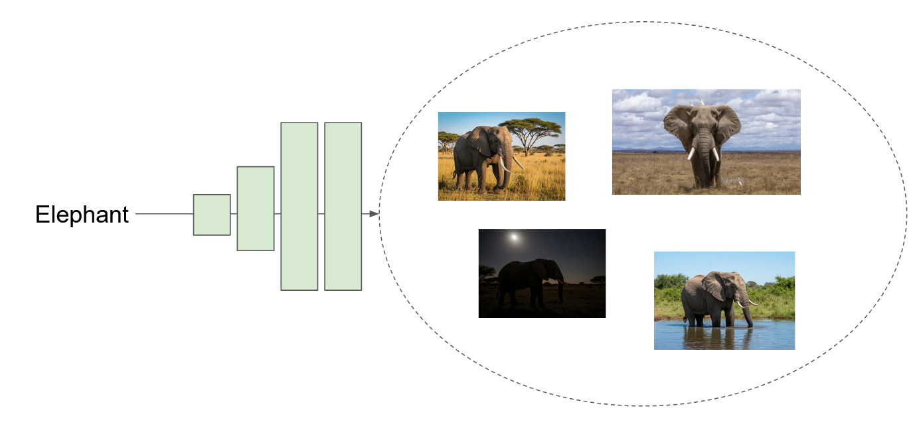Need stochastic function to generate diverse outputs
Solution: Latent Variables
Condition on stochastic input: \(g(\mathbf{y}, \mathbf{z})\) where \(\mathbf{z} \sim \mathcal{N}(\mathbf{0}, \mathbf{I})\)
Latent variable \(\mathbf{z}\): Unobserved characteristics
- Pose, size, number of individuals
- Time-of-day, surroundings, lighting
Conditional generation: \(g(\mathbf{y}, \mathbf{z})\) with label \(\mathbf{y}\)
Unconditional generation: \(g(\mathbf{z})\) without labels
Quiz: Latent Variables
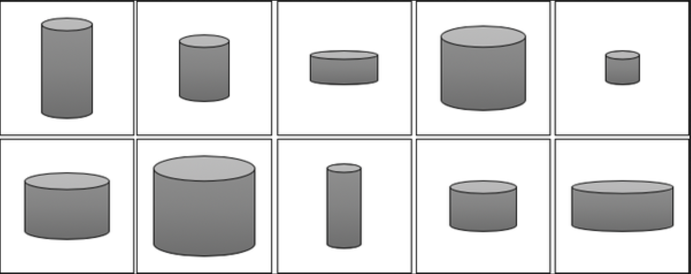What could be the latent variables for this dataset?
Quiz: Latent Variables
Answer: Width and height (2 unobserved latent variables)
Latent Space Example
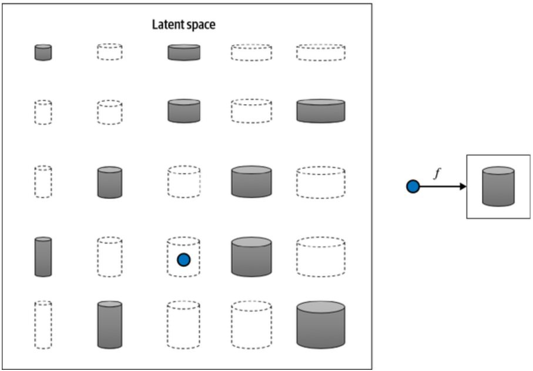Mapping from 2D latent space to outputs
Learning Generative Models
Core Objective
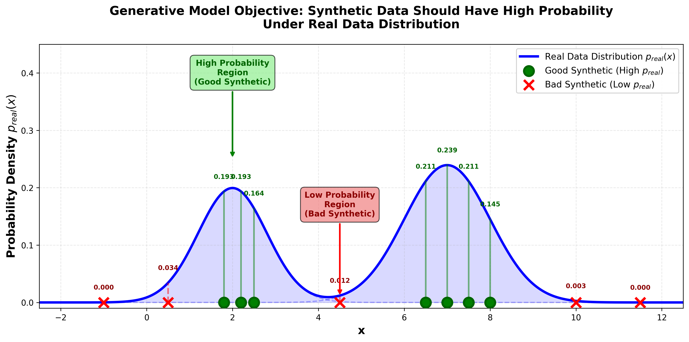Goal: Synthetic data \(\hat{\mathbf{x}}\) should have high probability under real data distribution \(p_{\text{data}}(\hat{\mathbf{x}})\)
Two Approaches
1. Implicit Models (Direct)
Learn function that directly generates samples: \(g(\mathbf{z}) = \mathbf{x}\)
2. Density Models (Indirect)
Learn probability density function \(p_{\theta}(\mathbf{x})\)
Density Models
Learn \(p_{\theta}: \mathbf{x} \to [0, \infty)\) with normalization:
\[\int_{\mathbf{x}} p_{\theta}(\mathbf{x}) d\mathbf{x} = 1\]
Objective: Maximize likelihood of training data
\[\underset{\theta}{\arg\max} \frac{1}{N} \sum_{i=1}^{N} \log p_{\theta}(\mathbf{x}^{(i)})\]
Learning a Density Model
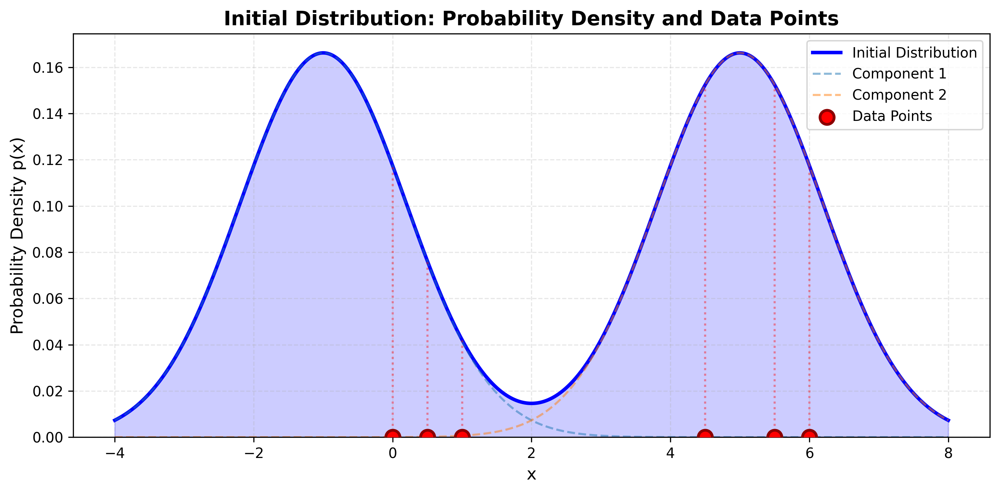
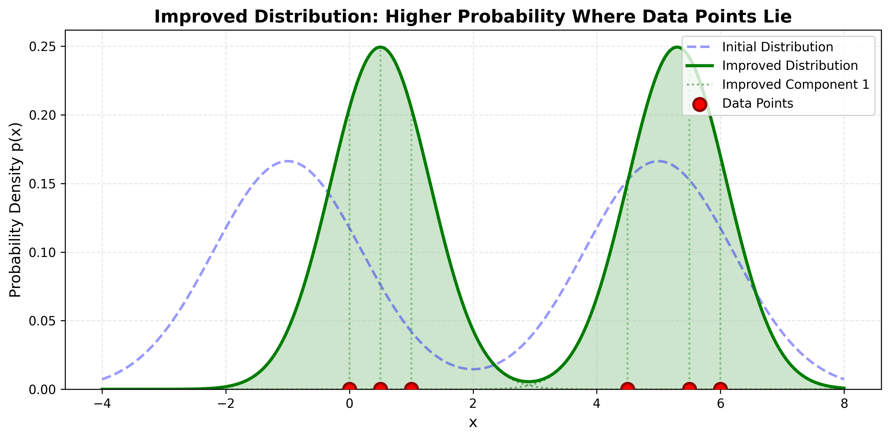
Distribution adapts to place higher probability where data points lie
Desirable Properties
Property 1: Efficient Sampling
- Generate new samples quickly
- Critical for real-time applications
- Excel: GANs, normalizing flows (single forward pass)
- Struggle: Autoregressive, diffusion models (sequential steps)
Property 2: High-Quality Sampling
- Realistic, detailed samples
- Indistinguishable from real data
- Excel: Modern GANs, diffusion models, large autoregressive
- Often trades off with computational cost
Property 3: Coverage (Diversity)
- Generate full diversity of training data
- Avoid mode collapse (limited variety)
- Excel: VAEs (good coverage)
- Challenge: GANs (risk mode collapse)
Property 4: Well-Behaved Latent Space
- Smooth, meaningful structure
- Similar \(\mathbf{z}\) → similar outputs
- Enables interpolation and controlled generation
- Excel: VAEs (explicit training objective)
Property 5: Disentangled Latent Space
- Different dimensions control independent factors
- Example: separate controls for pose, lighting, color
- Enables fine-grained controllable generation
- Requires careful architectural design
Property 6: Efficient Likelihood Computation
- Evaluate \(p_{\theta}(\mathbf{x})\) for any sample
- Enables direct optimization, anomaly detection
- Have: Autoregressive, flows, VAEs (approx)
- Lack: GANs, many diffusion models
Quiz: No Perfect Model
Why is there no generative model that achieves all desirable properties?
Quiz: No Perfect Model
Why is there no generative model that achieves all desirable properties?
Answer: Fundamental tradeoffs exist between properties (e.g., fast sampling vs. exact likelihood, quality vs. coverage)
Evaluation
Model Comparison
| Method | Latent Variables | Density | Fast Sampling |
|---|---|---|---|
| Autoregressive | ❌ | ✅ | ❌ |
| Diffusion | ✅ | ⚠️ | ❌ |
| GANs | ✅ | ❌ | ✅ |
| VAEs | ✅ | ⚠️ | ✅ |
Challenge
Evaluating quality and diversity is not trivial
- Likelihood: Only for models with \(p_{\theta}(\mathbf{x})\)
- Human studies: Cumbersome, not scalable
- Automated metrics: Various scores proposed
Inception Score
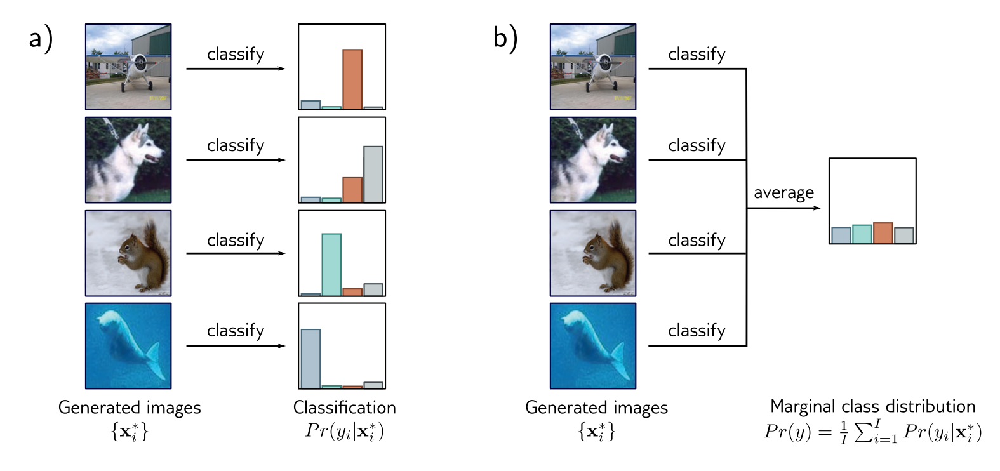Uses classifier to evaluate quality and diversity
Inception Score Intuition
- Good model generates images classifier predicts with high confidence
- Marginal distribution should be uniform (all classes represented)
- Only feasible for datasets with known classes (e.g., ImageNet)